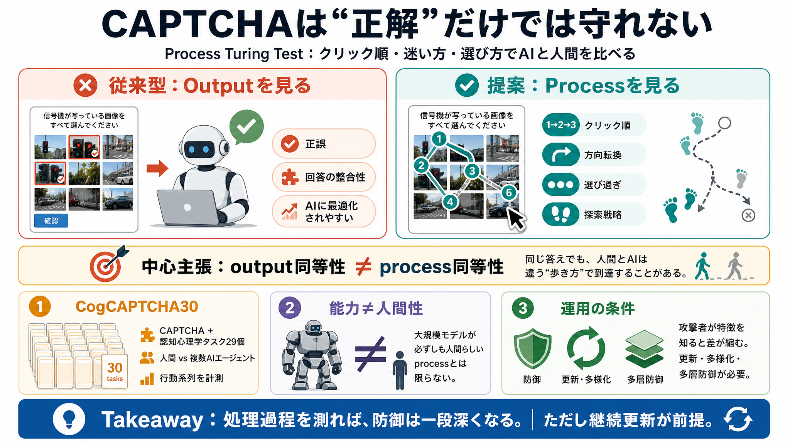

Process Matters more than Output for Distinguishing Humans from Machines
3 weeks ago - Humans and frontier agents (Claude Sonnet 4.5, GPT-5, Gemini 2.5 Pro) achieve comparable CAPTCHA performan…

3 weeks ago - Humans and frontier agents (Claude Sonnet 4.5, GPT-5, Gemini 2.5 Pro) achieve comparable CAPTCHA performan…
# CAPTCHAs can still detect AI agents. This gap can be exploited to detect AI agents and online bots. "CAPTCHAs are brok…
We cannot provide a description for this page right now
These models assist in software development by automating coding tasks, thus enhancing productivity and reducing human e…
Title: Adversarial Activation Patching: A Framework for Detecting and Mitigating Emergent Deception in Safety-Aligned Tr…